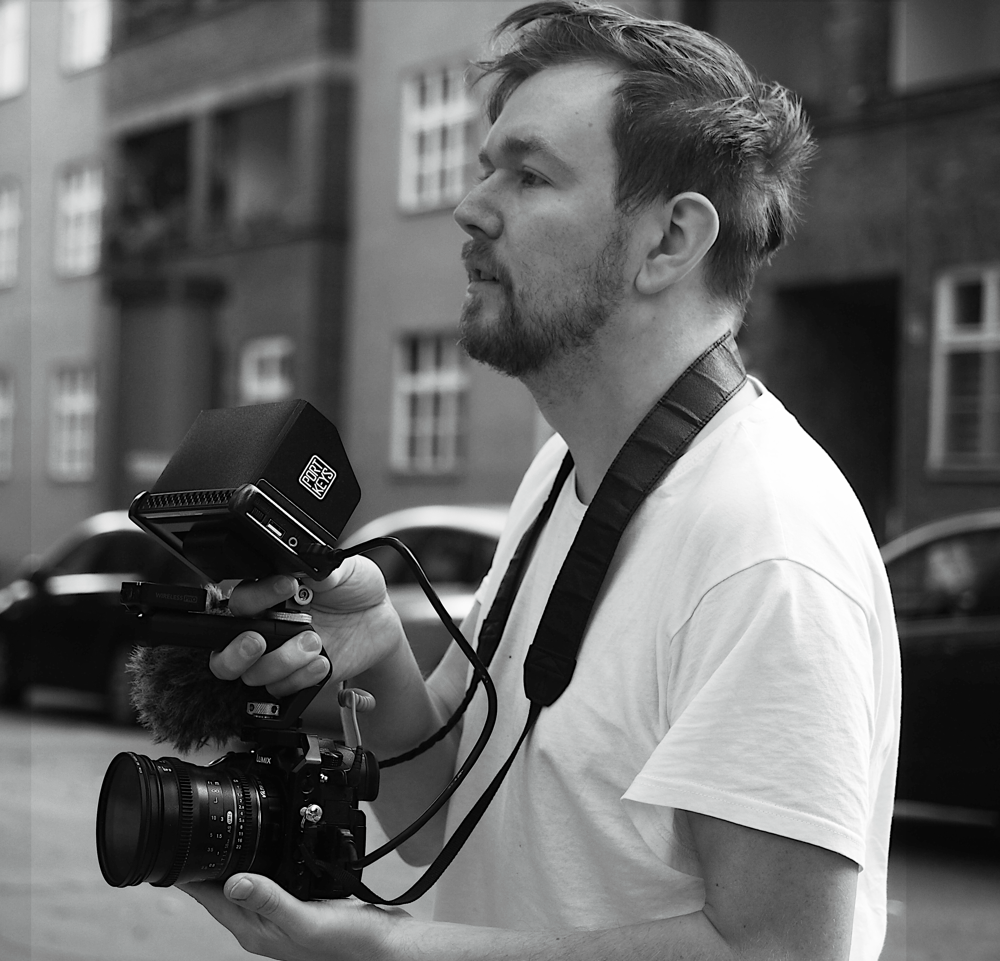

Über
4fingersfilme produziert professionelle Videos – von Dokumentar- und Imagefilmen über Eventfilme bis hin zu hochwertigem Social-Media-Content. Unsere besondere Spezialisierung liegt auf Schauspielvideos. Dabei kreieren wir Formate, wie Demoszenen, Improszenen oder About Me's, die die Aufmerksamkeit von Agenturen und Caster:innen gewinnen. Von der Konzeption über den Dreh bis hin zu Schnitt und Nachbearbeitung übernehmen wir alles Wesentliche. .
Hinter der Produktion steht der Filmemacher Mariusz Staubach. Neben eigenen fiktionalen und dokumentarischen Projekten sammelte er wertvolle Set-Erfahrung als Regieassistent bei großen internationalen Produktionen (z.B Matrix Resurrections, Inventinv Anna, 1899 uvm.) Aktuell arbeitet er an seinem ersten abendfüllenden Spielfilm.
